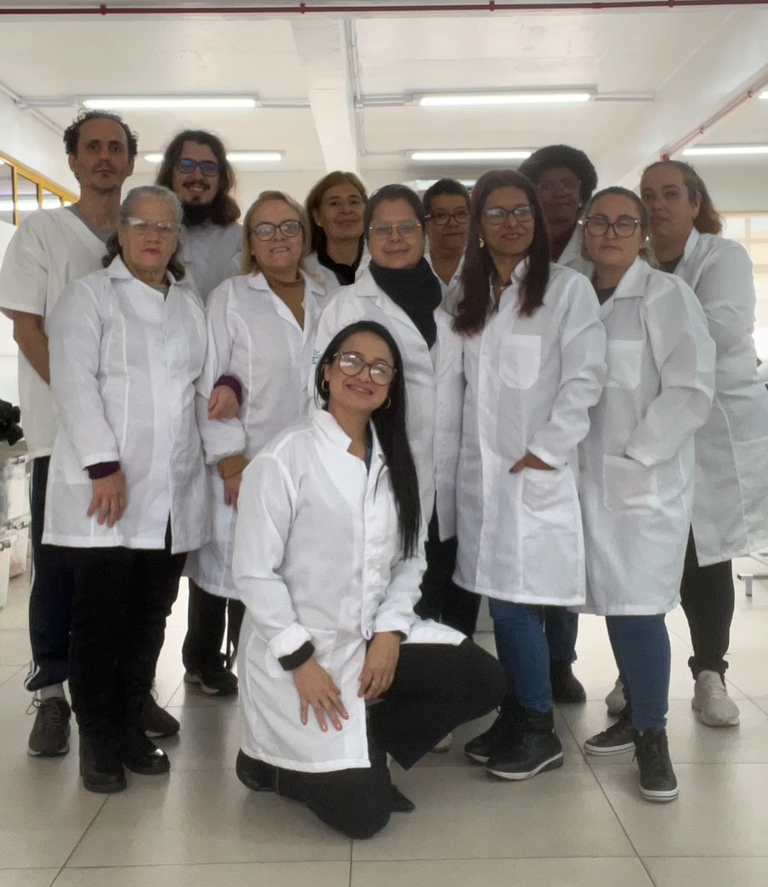

Cartilha digital
Entre Palavras e Silêncios
O cuidado ao idoso com transtornos psiquiátricos.
Abordagem verbal, escuta ativa, reconhecimento de crises e encaminhamento responsável.
Foto da Turma

Clique na imagem para ampliar.
Informações
Curso: Cuidador de Idosos
Instituição: Senac Saúde Porto Alegre
Turma: 9584
Período: 24/02/26 - 09/06/26
Professora: Léia Gonchoroski Machado
Integrantes
- Clara Solange Pena
- Everton Quadros do Couto